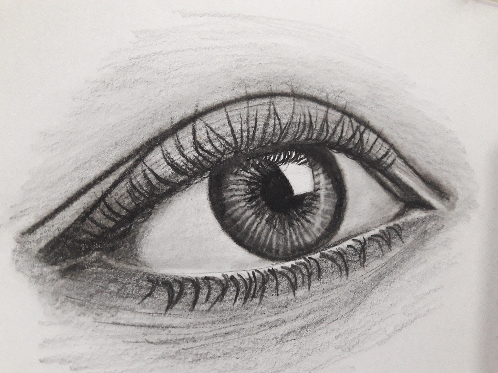
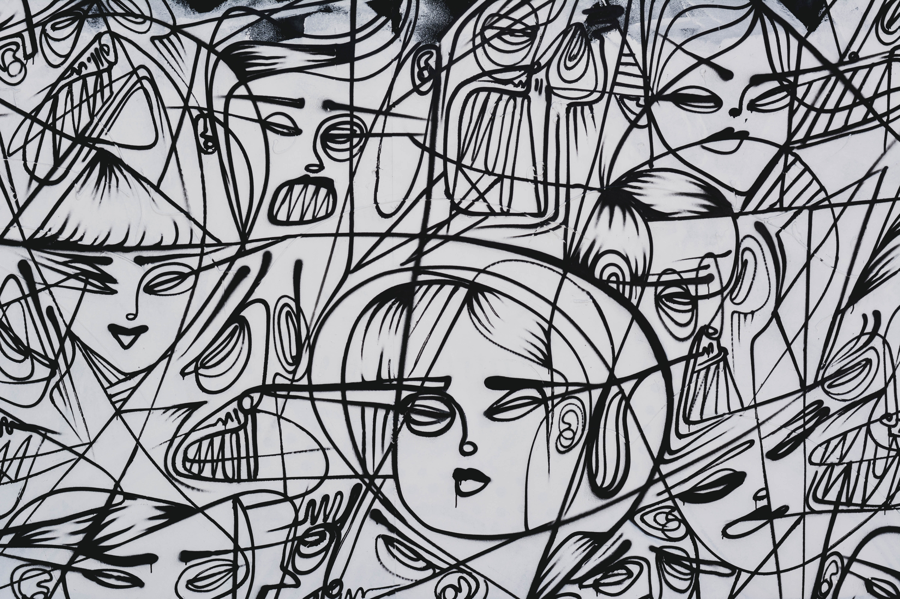
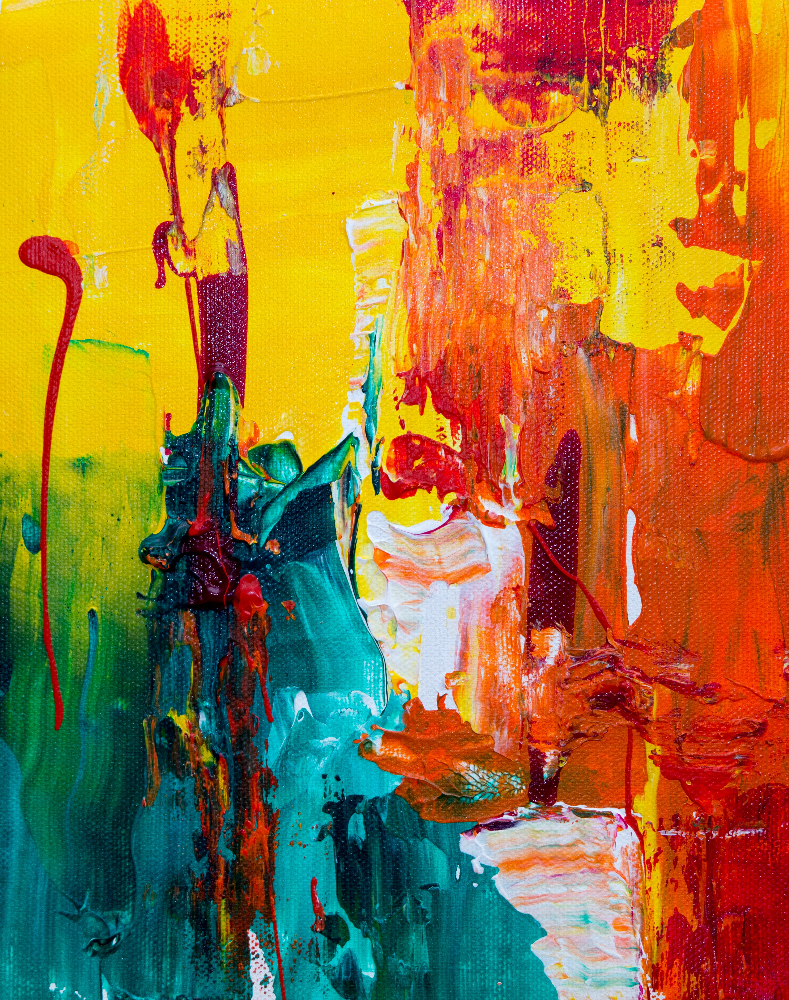
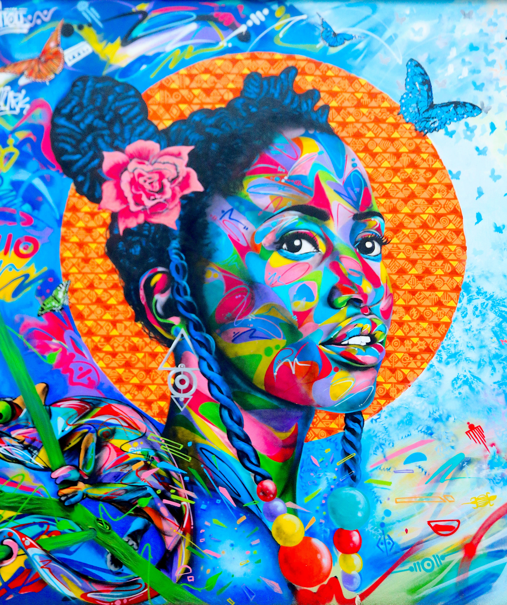

Ideen, Skizzen und mehr
inspiration
Durch meine Ausbildung und Arbeit als Designer, bin ich ständig auf der Suche nach neuer Inspiration. Obwohl ich mich als Digital Designer sehe, experimentiere ich auch gerne auf Papier, am liebsten zeichne ich gerne Portraits von Menschen.


Ich digitalisiere auch gerne meine Skizzen und forme sie zu richtigen Illustrationen.
